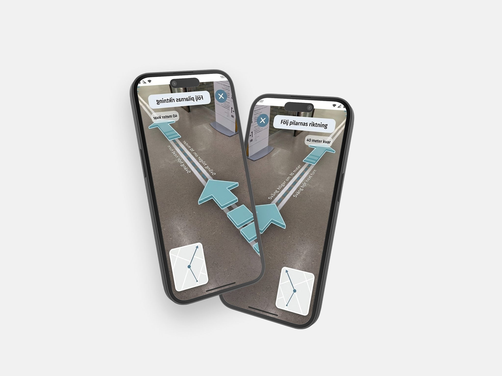

Navigating complex spaces with clarity
Libraries are rich environments, but for people with cognitive disabilities, the density of shelving systems, signage, and floor layouts can make independent navigation difficult. This project explored how augmented reality could act as a calm, non-intrusive guide through space.
The goal was not to build a flashy AR experience — it was to reduce cognitive load and anxiety, and to do it in a way that felt gentle and empowering rather than clinical.
Understanding who we were designing for
The research phase involved interviews with library staff and secondary research into wayfinding challenges for users with ADHD, autism, and other cognitive differences. Key insights included a strong preference for visual cues over text, the importance of minimizing decision points, and the anxiety caused by asking for help.
Competitive analysis looked at existing accessible wayfinding systems — most were screen-based kiosks that required interaction rather than passive guidance.
Calm, ambient, always a step ahead
The UI was designed to be as invisible as possible — directional arrows anchored to floor level, a soft color system tied to library sections, and subtle audio cues for confirmation. No maps, no complex menus. Just the next step.
Multiple iterations were tested against a paper prototype of the library floor. Color contrast, arrow sizing, and interaction density were all refined based on feedback from testing sessions.
What we learned
User testing revealed that the directional cue system significantly reduced the time users spent hesitating at decision points. Participants responded positively to the low-contrast, ambient visual language — one described it as "like the library is quietly helping you."
The project surfaced a wider question about how AR can support rather than overwhelm — a direction I'd like to continue exploring in future work.